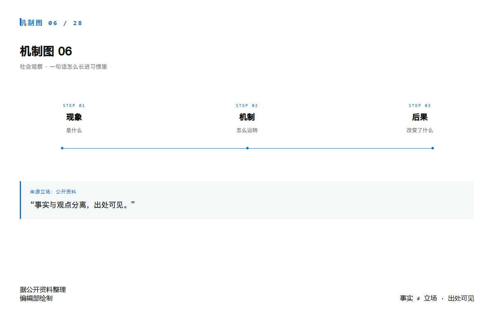

「算了不说了」，怎么成了口头禅
社会观察 · 一句话怎么长进习惯里
「男的不配。」说完自己先笑，笑完继续刷。这句话他大概说过不止一次。
自嘲梗和「算了不说了」没有权威统计。下面的判断来自公共语料里的高频表达，和语言习惯如何被环境塑造的一般观察：引文照抄流行语料，不指向具体事件，也不评价任何群体。说的人未必恶意，听的人也未必受伤，这里只记录它出现的方式。
但这事和今天的你，有关系。一个人反复说「算了」，到最后不是他懒得说，是他已经默认说了也没用。语言会把判断沉淀成反射，反射比观点更难改。
自嘲梗的流行说明一件事：当事人已经用戏谑接受了那套设定。「男的不配」「我不配说话」听着是玩笑，功能却是认领，既不挑战设定，又保留一点体面。玩笑是安全的，因为它永远可以被解释成「我就随便说说」。
可随便说说的次数多了，设定就长进了语言习惯。你不再需要被人说服，你自己就会替它复读。外来的判断变成自发的表达，这一步最安静，也最难逆转：反对意见还在，只是当事人不再替它开口。
从前要被围攻、被截图、被定性，才逼得人退出。现在看到议题的预设就已经绕开。「算了不说了」从一句台词变成条件反射，中间隔着的不是某一次伤害，是很多次「说了也没人听」的核对。每一次核对都在压低开口的意愿。
阈值下调之后，沉默不再需要理由。你不说，别人以为你默认；你偶尔说一句，又会被当成例外。语言习惯就是这样养成的：它不写在任何规则里，却比规则更稳定，因为它是你自己一次次选出来的。
📌 一个值得记住的判断
当一个人开始用自嘲替别人下判断，那套设定就已经不需要外人来维持了。它会自己在日常对话里运行，连提醒都显得多余。
路径不复杂：情绪内容互动高，高互动被排到前面，高频复现带来熟悉感，熟悉感被当成真实，真实感再沉淀成默认设定。接下来，人只要顺着默认设定说话就行。每一步都没有恶意，合起来却让一整批表达省掉了论证。
更隐蔽的是，自嘲还会反过来加固设定。旁观者看到当事人自己都在说「不配」，就更相信这是共识；当事人看到别人也在笑，就更确信没必要较真。一个循环就此闭合，谁都没强迫谁，但谁都很难先走出来。
必须说清另一面：同一套自嘲结构，在别的议题上也长期被用来消解女性的认真表达——「别闹了」「想开点」「多大点事」，都是让事情过去的旧版本。所以这里不指控谁发明了它，只看谁在用它。句式是中性的，占位不是。
同理，「算了不说了」也不是某一方的专利。任何在讨论里反复算完账的人，都会把这句话练熟。把它记成某个性格的标签，就把一个可讨论的语言现象，换成了对一群人的判决。这里不换靶子。
语言习惯的可怕之处，是它不需要被同意就能生效。你不必认同「不配」，只要跟着说过几次，它就滑进了你的默认句库。下次开口前，句子已经替你选好了立场，而你以为那只是随口一说。
能做的很小：把「算了」后面的那半句补出来。算了什么？为什么不说了？是因为真没关系，还是因为说了没人听？补出来不一定能改什么，但至少这句话重新变成了判断，而不是反射。
网络自嘲梗，据公共语料观察
"算了，不说了。"
它听着像懒得争，其实是很多次核对之后攒出来的结论。

▲ 默认设定如何长进语言习惯（编辑部绘制）
✍️ 你最近一次说「算了不说了」，是为了什么？
是懒得争，还是争过没用？评论区说说。觉得有用，点个赞、点个「在看」，转给也常把这句话挂着的人。
下一篇：四个条件凑齐之后，对轰怎么成了算得过来的选择。
资料来源
网络自嘲梗「男的不配」「我不配说话」及「算了，不说了」，据公共语料观察，出处不可考，作语言标本引用，不指向具体事件与群体。
「别闹了」「想开点」「多大点事」为同一话术结构的旧版本，据公共语料观察，用于保持论述对称，非对任何群体的指控。
自嘲与「算了不说了」的内化程度无公开统计，系描述性判断；曝光效应—熟悉感—真实性链条为心理学常识层面的描述。
社会观察，不站任何性别立场。事实据公开来源，未证实指控不转述、不评价。拆解规则是为了理解，不是行动指南。
出口：可谈的一步，是把「算了」变成一个问题而不是一句结论，让沉默的理由有机会被看见。不指望它翻盘，只指望它别再假装成同意。